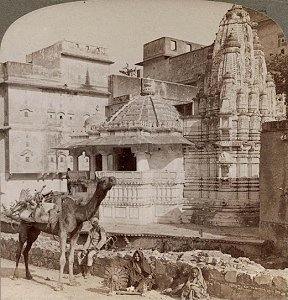

Hinduism
|
 |
The Web of Indian Lifeby Sister Nivedita
|
This is a collection of essays by Sister Nivedita, Margaret E. Noble, an Anglo-Irish Hindu convert who moved to India and devoted herself to helping poor women of all castes. It includes an appreciative introduction by Rabindranath Tagore, the Nobel laureate writer, one of her many friends in the Bengali artistic community.
Although long out of print, this book was a sensation when it was originally published. Nivedita here espouses Hindu pan-Indian nationalism, while also rationalizing some of the aspects of Indian life such as the caste system. She deals with the historical background of religious tolerance in India, including the contributions of Muslims and Buddhists, and the ability of Hinduism to assimilate compatible doctrines, no matter what their source.
Nivedita has a unique and much beloved position in Indian history as one of the few westerners who took up the cause of Indian independence. You will come away from reading this book with a new appreciation for the problems which India faced in forging a democratic nation based on diversity.
Also at this site by Sister Nivedita are Studies from an Eastern Home, and Kali the Mother.